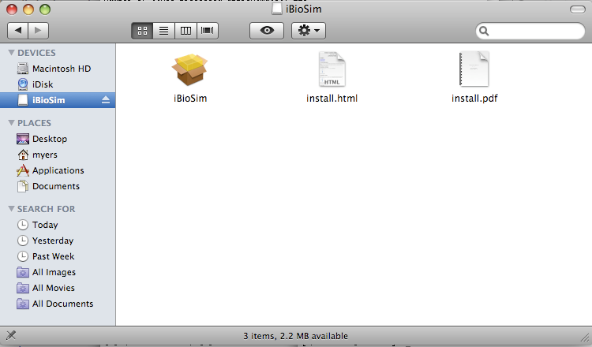
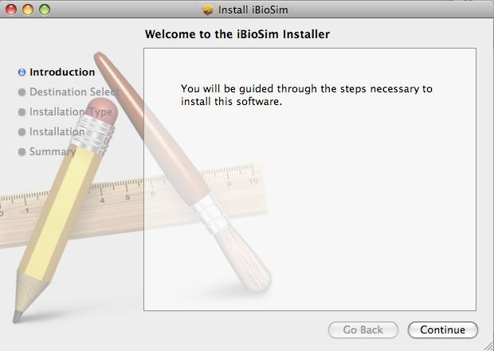
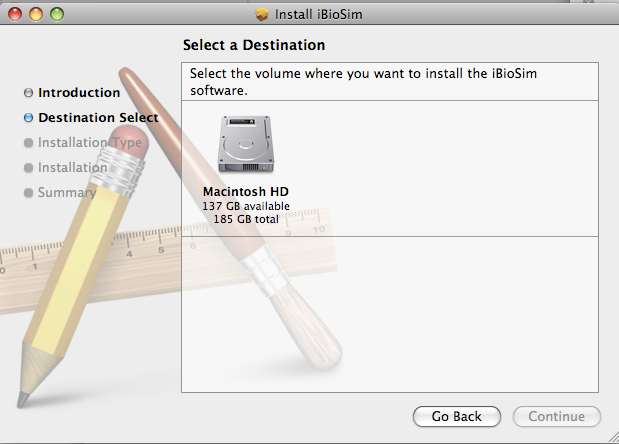
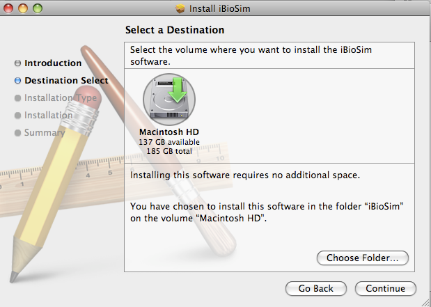
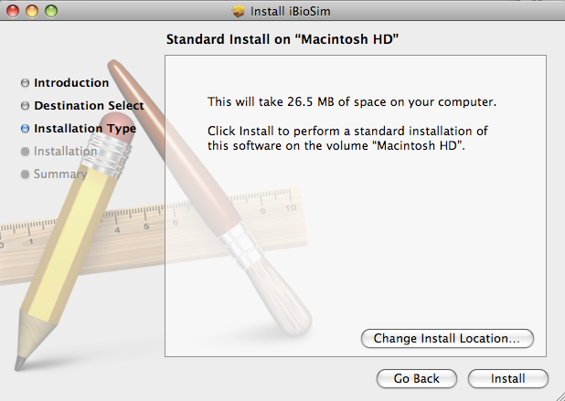
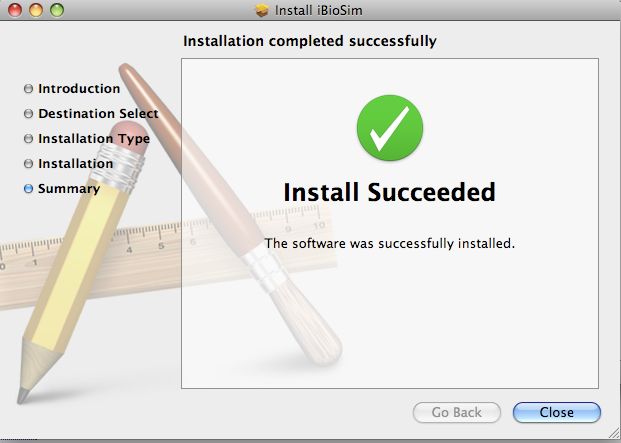

iBioSim: Installation Instructions
Chris J. Myers
Created: August 11th, 2008
Last Revised: August 14th, 2008
1 General Requirements
There are versions of iBioSim available for Windows, Linux, and
MacOS. You can download the appropriate installation file from:
http://www.async.ece.utah.edu/iBioSim
iBioSim requires that you have
Java Runtime Environment 1.5
or higher install on your system. It also requires that you have
Graphviz.
Also, you should associate files with a ".dot" extension with the
Graphviz tool, and files with the ".xhtml" extension to your
web browswer.
2 Installation on Windows
Download and execute iBioSim-〈version〉-Setup.exe.
The installation uses InstallJammer. It first asks you for your
preferred installation language. Make your selection and press OK.
 The next screen tells you that you what version you are installing.
Press Next to continue.
The next screen tells you that you what version you are installing.
Press Next to continue.
 Next, it ask you for an installation location. Please make sure to
select a path that does not have any spaces or special symbols as
these cause problems with iBioSim.
Next, it ask you for an installation location. Please make sure to
select a path that does not have any spaces or special symbols as
these cause problems with iBioSim.
 You are now ready to install. Press Next to continue.
You are now ready to install. Press Next to continue.
 You are all done. Press Finish. If selected, iBioSim
will launch immediately. Otherwise, you can start it using your
desktop shortcut or from your start menu.
You are all done. Press Finish. If selected, iBioSim
will launch immediately. Otherwise, you can start it using your
desktop shortcut or from your start menu.
 In your start menu, there should be an option to uninstall. If you
select this, it will ask if you are sure then proceed to completely
remove iBioSim from your system. It is highly recommended that
you remove iBioSim using this uninstall procedure before
installing a new version.
In your start menu, there should be an option to uninstall. If you
select this, it will ask if you are sure then proceed to completely
remove iBioSim from your system. It is highly recommended that
you remove iBioSim using this uninstall procedure before
installing a new version.
3 Installation on Linux
Since InstallJammmer is also used for the Linux install, the
installation instructions are essentially the same.
First, download iBioSim-〈version〉-Linux-x86-Install.
Open a terminal and browse to where this file was download. You must
make this file executable:
chmod u+x iBioSim-〈version〉-Linux-x86-Install.
You should then execute this file:
./iBioSim-〈version〉-Linux-x86-Install.
This starts InstallJammer. It first asks you for your
preferred installation language. Make your selection and press OK.
The next screen tells you that you what version you are installing.
Press Next to continue.
Next, it ask you for an installation location. Please make sure to
select a path that does not have any spaces or special symbols as
these cause problems with iBioSim.
You are now ready to install. Press Next to continue.
You are all done. Press Finish. If selected, iBioSim
will launch immediately. Otherwise, you can start it using your
desktop shortcut or from your start menu.
In your start menu, there should be an option to uninstall. If you
select this, it will ask if you are sure then proceed to completely
remove iBioSim from your system. It is highly recommended that
you remove iBioSim using this uninstall procedure before
installing a new version.
4 Installation on MacOS
To install on MacOS, you need to download iBioSim.dmg. You should
open this file with DiskImageMounter.app. This should open up
this disk image in finder. You should then
double-click on the iBioSim package.

This starts the iBioSim installer. Press Continue to go on.

You should now select the drive you wish to install on. iBioSim
will be installed in your Applications directory on this drive.


It will then tell you how much space it will take and allow you to
confirm that you wish to install by pressing Install.

You should then get a message that it installed correct. At this
point, you should be able to use Finder and locate iBioSim
in your Applications directory. iBioSim is started by
double-clicking on it.

File translated from
TEX
by
TTH,
version 3.81.
On 16 Mar 2011, 18:23.